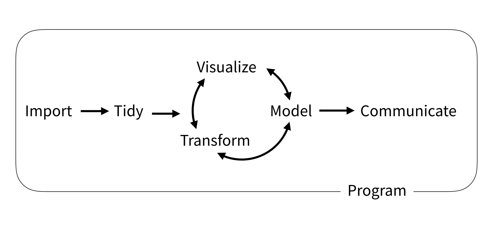
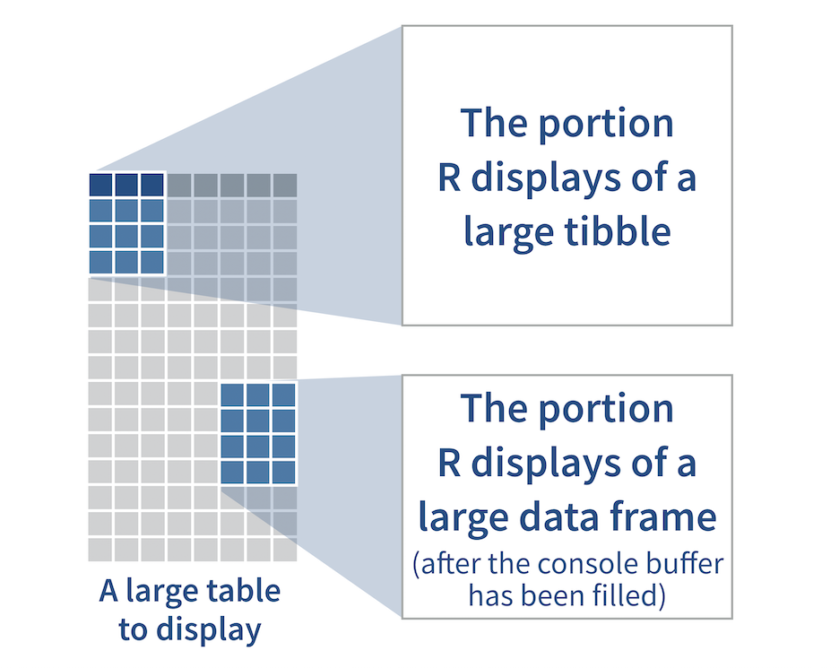

How to use this book
The recipes in this book are organized according to the model of data science presented in R for Data Science. When you do data science, you find yourself repeating the same sequence of steps:

I’ve grouped the recipes by task with the exception of Transform, which is split into chapters based on the type of data or structure to transform. To drill down to a recipe, click on one of the task names in the sidebar. If you are new to R, begin with Program, which will show you how to install the tidyverse.
To save space, each recipe assumes that you have already run library("tidyverse"). If additional library() calls are required, they will appear in the recipe.
0.1 How to get help
R comes with a built in reference manual, which is fondly (but sometimes inaccurately) called R’s help pages. You can use R’s help pages to glean details that I do not cover here.
To access the help page for an R function, type a ? at the command line of your R console, followed by the function name, and then hit enter to run the result, e.g.
?mutateIf a function comes in an R package, you will need to load the package with library() before you can access the function’s help page. Alternatively, you can access the help page by typing a ? followed by the package name, followed by two colons, followed by the function name, e.g.
?dplyr::mutate0.2 What is the tidyverse?
Each of the recipes in this book relies on R’s tidyverse, which is a collection of R packages designed for data science. Tidyverse packages share a common design philosophy, so when you learn how to use one tidyverse package, you learn a lot about how to use the others.
Tidyverse packages are also:
- optimised to run fast, relying on C++ under the hood
- maintained by a paid staff of talented developers
- unusually well documented, see tidyverse.org and R for Data Science as examples.
Install the complete set of tidyverse packages with:
install.packages("tidyverse")Each tidyverse package is a collection of functions, documentation, and ideas. You do not need to know which ideas are in the tidyverse to use tidyverse functions, just as you do not need to know which ingredients are in a cake mix to make a cake. However, understanding the tidyverse will help you see the best practices embedded in each recipe. This will make it easier for you to adapt the recipes to your own work.
0.2.1 Tidy data
Each package in the tidyverse is designed to use and return tidy data whenever appropriate. Tidy data is tabular data organized so that:
- Each column contains a single variable
- Each row contains a single observation

In practice, tidy data in R appears as data frames or tibbles. A tibble is an enhanced version of a data frame that is easier to view at the command line. R treats tibbles like data frames in almost every other respect, because tibbles are a subclass of data frame.

Tidy tibbles act as a common data structure that tidyverse functions use to talk to each other. Tidy data has other advantages as well. Tidy data aligns with R’s native data structure, the data frame; and tidy data is easy to use with R’s fast, built in vectorized operations. You can think of tidy data as the data format optimized for R.
0.2.2 Tidy tools
Each package in the tidyverse also provides tidy tools. Tidy tools are R functions that:
- Accept and return the same type of data structure (as input and output)
- Focus on one task per function
- Can be combined with other functions to perform multi-step operations (using the pipe operator,
%>%)
Tidy tools are easy to understand and easy to use. They encourage you to organize your work into a sequence of steps that can be considered and checked one at a time. If tidy data is the data format optimized for R, tidy tools are the function format optimized for you.